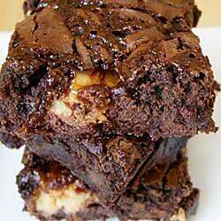

Candy Bar Brownies
Yummy Candy Bar Brownies

This homemade lasagna recipe is sure to delight. It's a simple recipe that is easy to make with basic ingredients and also tastes delicious.
The kids will love it! This recipe only takes just over an hour with prep time, cooking, and cooling. Serve hot and watch your guests enjoy!
Ingredients You'll Need
- 1 (18.25 ounce) package German chocolate cake mix
- 3/4 cup melted butter
- 2/3 cup sweetened condensed milk
- 4 (2.16 ounce) bars chocolate-coated caramel-peanut nougat candy, chopped
How to Prepare
- Mix cake mix with melted butter or margarine and condensed milk. Spread out 1/2 of the mixture into a 9 x 13 inch pan.
- Bake at 350 degrees F (175 degrees C) for 10 minutes.
- Slice candy bars into little slices. Lay these on top of the baked crust. With the remaining batter-crumble it on top of the candy bars. It will have a crumbly texture. No need to spread it on top to make it smooth.
- Put it back into the oven and bake it for another 20 minutes.